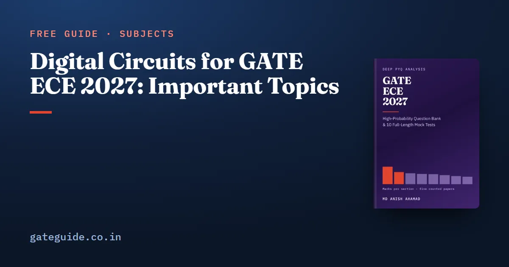

Digital Circuits for GATE ECE 2027: Important Topics

Digital Circuits averaged 9.8 marks across the five GATE EC papers counted question by question for this site (2010, 2019, 2020, 2025 and 2026), and the trend runs upward: 6, 10, 11, 9, then 13 marks in 2026. It is also the section that rewards preparation most predictably. A counter either produces the stated sequence or it does not, and the same few templates keep coming back.
In this guide
It is one of only two sections whose syllabus did not change for 2027, so every counted question below still maps onto the current wording.
Key takeaways
- 32 questions and 49 marks across five papers, 15 of them 1-mark and 17 of them 2-mark.
- Sequential elements (flip-flops, counters, shift registers) are the one family in four of five papers.
- The tightest template in the section is maximum clock frequency from delays and setup time: 2020 Q.60 and 2025 Q.62 are the same computation, both 2-mark numerical answers.
- In 2019, the paper set by IIT Madras which also sets GATE 2027, seven of the ten Digital Circuits marks were transistor-level static CMOS.
- The Computer Organization line produced zero questions in five papers.
- Question numbers follow the book's count, which runs 1 to 65 through each paper. The 2019 and 2020 papers restart their technical questions at 1, so subtract 10 to find them there.
What the section is worth
| Paper | Organising institute | Questions | Marks | MCQ | NAT | MSQ |
|---|---|---|---|---|---|---|
| 2010 | IIT Guwahati | 4 | 6 | 4 | 0 | 0 |
| 2019 | IIT Madras (sets 2027) | 7 | 10 | 5 | 2 | 0 |
| 2020 | IIT Delhi | 7 | 11 | 4 | 3 | 0 |
| 2025 | IIT Roorkee | 6 | 9 | 4 | 2 | 0 |
| 2026 | IIT Guwahati | 8 | 13 | 5 | 1 | 2 |
| Five papers | 32 | 49 | 22 | 8 | 2 |
The 2010 figure is the outlier, and 2010 is the oldest counted paper by nine years. The four papers from 2019 onward average 10.75 marks, and the two highest counts are the two most recent papers.
Some published weightage tables show this section smaller than that, and the reason is filing rather than counting. A question whose figure is a pair of MOSFETs looks like a devices question; a memory-addressing question once phrased around a microprocessor looks like it belongs to a heading that no longer exists; an ADC question ending in decibels looks like Communications. The syllabus puts all three in Digital Circuits. The GATE ECE subject-wise weightage guide explains why only a count against the answer keys should be trusted.
The topic map
| Topic | Papers | Counted questions | Marks |
|---|---|---|---|
| Sequential elements: flip-flops, counters, shift registers | 4 of 5 | 2010 Q.37; 2019 Q.35; 2025 Q.45; 2026 Q.27, Q.35, Q.49 | 9 |
| Static CMOS implementation of logic | 2 of 5 | 2019 Q.23, Q.24, Q.25, Q.50, Q.63; 2026 Q.20 | 8 |
| Data converters: ADC, DAC, sample and hold | 2 of 5 | 2020 Q.30, Q.46; 2025 Q.35, Q.44 | 6 |
| Boolean algebra, K-map minimisation, gates | 3 of 5 | 2010 Q.11, Q.12; 2025 Q.23; 2026 Q.56 | 5 |
| Multiplexers and decoders | 3 of 5 | 2010 Q.39; 2020 Q.20; 2026 Q.48 | 5 |
| Number representations | 2 of 5 | 2020 Q.48; 2026 Q.45 | 4 |
| Finite state machines | 2 of 5 | 2019 Q.49; 2020 Q.49 | 4 |
| Timing: delay, setup and hold, critical path | 2 of 5 | 2020 Q.60; 2025 Q.62 | 4 |
| Memories and address arithmetic | 2 of 5 | 2020 Q.29; 2026 Q.42 | 3 |
| Arithmetic circuits | 1 of 5 | 2025 Q.24 | 1 |
| Computer Organization | 0 of 5 | none | 0 |
The templates that repeat
A repeating template is worth more than raw frequency, because it can be practised to reflex.
Timing. 2020 Q.60 and 2025 Q.62 both assemble clock-to-Q delay, combinational delay and setup time, invert the total, and ask for a frequency. As an illustration of our own, delays of 2 ns, 5 ns and 3 ns give a 10 ns minimum period, so 100 MHz:
Both counted instances were numerical answers, so there were no options to check against.
The multiplexer as a function generator. 2010 Q.39, 2020 Q.20 and 2026 Q.48 are one template across sixteen years and three institutes: fix the data inputs of a 4:1 multiplexer and ask for the function. The only variations were an enable pin in 2020 and a minterm-list answer in 2010.
Sequential elements split into two sub-templates. Frequency division through a toggling chain came as 1-mark numerical answers (2019 Q.35, 2026 Q.35). State-sequence tracing of a counter, a flip-flop-and-multiplexer circuit or a shift register with XOR feedback came as 2-mark multiple choice (2010 Q.37, 2025 Q.45, 2026 Q.49).
Finite state machines run in both directions. 2020 Q.49 gives the state diagram and asks for the sequence it detects; 2019 Q.49 gives the circuit and asks for the state diagram. Practise both.
The traps are small and exact. The last address of a block is the start plus the size minus one, (2026 Q.42). Complements are not only binary: 2026 Q.45 asked the 10's complement of a decimal number. An ADC's best-case signal-to-noise ratio follows dB (2025 Q.44), and the 1.76 is the part people drop.
The 2019 paper: transistor-level digital
GATE 2027 is set by IIT Madras, and 2019 is the one counted paper IIT Madras also set. Five of its seven Digital Circuits questions, worth seven of its ten marks, were static CMOS: the effect of widening the pMOS on noise margins (Q.23), a tri-state output (Q.24), a CMOS schematic identified by its function (Q.25), nMOS pass transistors charging capacitors (Q.50) and the width ratio that puts an inverter's switching threshold at half the supply (Q.63). No other counted paper came close. 2026 spent 1 mark there (Q.20), and 2010, 2020 and 2025 spent none.
Notice that 2019 asked it in four different modes: qualitative, recognition, behavioural and numerical. Preparing only "identify the gate from the schematic" covers one of the five.
One paper is a signal, not a law, and 2019 is seven years old. The sensible response, in judgement, is to give static CMOS real preparation time, above what the two recent papers alone would justify, without betting the section on it.
What the 2027 syllabus changed
Nothing. The Digital Circuits paragraph in the 2027 EC syllabus is word for word the same as in 2026, down to a stray hyphen in "floating-point- numbers". The GATE ECE 2027 syllabus changes guide has the section-by-section comparison.
Two consequences follow. First, the counted questions are a directly usable guide: nothing in them has left the syllabus, and nothing new has entered it that lacks a history. Second, the one gap is old rather than new. Computer Organization (machine instructions, addressing modes, the ALU, data path and control unit, pipelining) has been in the syllabus throughout and produced no question in any counted paper. Syllabus text can still be revised, so confirm the current PDF on the official GATE 2027 site.
How to prepare it
- Sequential circuits: trace counters, shift registers and XOR-feedback registers through a few clocks, and compute division ratios through toggling chains.
- The timing formula, until the maximum clock frequency is a two-line calculation.
- Multiplexers as function generators and K-map minimisation with don't-cares. 2026 Q.56 put minimisation into multiple-select form, where a mishandled don't-care costs the whole question.
- Static CMOS in all four modes: pull-up and pull-down duality, noise margins, pass-transistor threshold drop and the switching threshold.
- Number representation and memory address arithmetic, including complements in bases other than 2.
- Data converters: a DAC code to a voltage, and an ADC's resolution and signal-to-noise ratio.
- Finite state machines, both directions.
- Computer Organization: about an hour of definitions, and no more on this evidence.
The question type is close to predictable once the topic is known. Timing has been a numerical answer both times; structural identification (multiplexer functions, state machines, number formats, schematics) has always been multiple choice. Multiple select appeared in this section only in 2026 (Q.27 and Q.56). A wrong multiple-choice answer costs mark on a 1-mark question and mark on a 2-mark one; the other two formats carry no negative marking.
For where this section sits in a complete plan, the GATE ECE last two months strategy shows how to fold section drills into revision, and the GATE ECE important topics guide ranks the recurring concepts across the whole paper. The GATE ECE 2027 book gives Digital Circuits 30 questions written for the book with full worked solutions, weighted on the corrected count and matched to the question types above. It is part of 925 questions and 10 full mock tests across 814 pages.
Frequently asked questions
How many marks is Digital Circuits in GATE ECE?
Across the five EC papers counted for this site it carried 49 marks in 32 questions, a mean of 9.8 marks a paper. By year it was 6, 10, 11, 9 and 13 marks for 2010, 2019, 2020, 2025 and 2026. Leaving out the 2010 paper, the oldest by nine years, the four later papers average 10.75 marks.
Did the GATE ECE 2027 syllabus change for Digital Circuits?
No. The Digital Circuits text in the 2027 EC syllabus is word for word the same as in 2026. It is one of only two sections with no change, the other being Electromagnetics. Every counted past question still maps onto a line of the current syllabus. Confirm the wording in the official PDF on the GATE 2027 site.
Is computer organization asked in GATE ECE?
It is in the syllabus, but it produced no question in any of the five counted papers, across four different organising institutes. The nearest item, 2020 Q.29, is a memory address-line count rather than instructions, addressing modes or pipelining. An hour on instruction formats, addressing modes and pipeline speedup is enough insurance on that evidence.
Which digital circuits topics are most important for GATE ECE 2027?
Sequential elements, meaning flip-flops, counters and shift registers, appear in four of the five counted papers and are the one near-certain family. After that come Boolean minimisation and multiplexers as function generators, three papers each, then timing, static CMOS, data converters, number representation, finite state machines and memory addressing, two papers each.
Why do some GATE EC weightage tables show Digital Circuits lower?
Mostly because of filing. Transistor-level CMOS questions tend to get filed under Electronic Devices or Analog Circuits, memory-addressing questions under a microprocessor heading, and data-converter questions under Analog or Communications. The syllabus puts all of them in Digital Circuits. Counted where the syllabus puts them, the section is larger than those tables suggest.
Sources
- GATE 2027 official website (IIT Madras)
- GATE 2027 EC syllabus (official PDF, IIT Madras)
- GATE 2026 EC question paper (IIT Guwahati)
- GATE 2026 EC answer key (IIT Guwahati)
- GATE 2025 EC question paper (IIT Roorkee)
- GATE 2020 EC question paper with answer key (IIT Delhi)
- GATE 2019 EC question paper with answer key (IIT Madras)
Dates, fees and the syllabus are set by the GATE 2027 organising institute and can change. Always confirm at gate2027.iitm.ac.in.